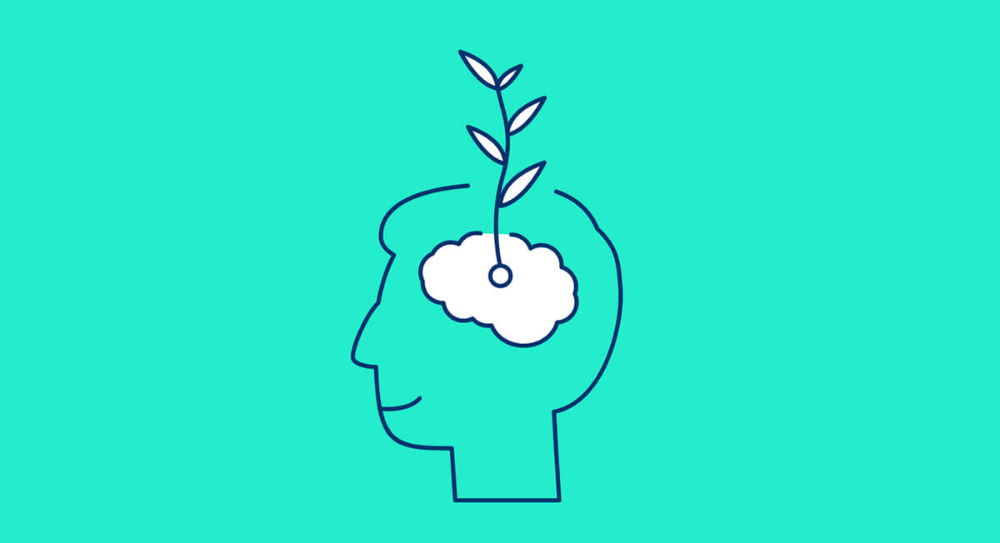

<ion-header class="ion-no-border" style="background-color: #24edce;">
  
</ion-header>

<ion-content style="--background: #24edce;">
  <ion-card class="centro">
    <ion-card-header>
      <ion-card-title>Resiliência</ion-card-title>
      <ion-card-subtitle>O que é?</ion-card-subtitle>
    </ion-card-header>

    <ion-card-content>
      A resiliência é a capacidade do indivíduo lidar com problemas, adaptar-se a mudanças, superar obstáculos ou
      resistir à pressão de situações adversas - choque, estresse, algum tipo de evento traumático, entre outros.
    </ion-card-content>
  </ion-card>

  <ion-row>
    <ion-col class="fechar">
      <ion-button shape="round" color="light" size="small">
        <ion-backdrop></ion-backdrop>
        <ion-icon slot="icon-only" name="arrow-back-outline"></ion-icon>
      </ion-button>
    </ion-col>
  </ion-row>
</ion-content>